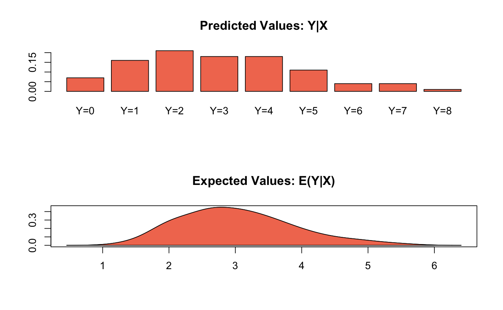

Probit Regression for Dichotomous Dependent Variables
| formula | a symbolic representation of the model to be
estimated, in the form |
|---|---|
| model | the name of a statistical model to estimate. For a list of other supported models and their documentation see: http://docs.zeligproject.org/articles/. |
| data | the name of a data frame containing the variables
referenced in the formula or a list of multiply imputed data frames
each having the same variable names and row numbers (created by
|
| ... | additional arguments passed to |
| by | a factor variable contained in |
| cite | If is set to 'TRUE' (default), the model citation will be printed to the console. |
Additional parameters avaialable to this model include:
weights: vector of weight values or a name of a variable in the dataset
by which to weight the model. For more information see:
http://docs.zeligproject.org/articles/weights.html.
bootstrap: logical or numeric. If FALSE don't use bootstraps to
robustly estimate uncertainty around model parameters due to sampling error.
If an integer is supplied, the number of boostraps to run.
For more information see:
http://docs.zeligproject.org/articles/bootstraps.html.
Vignette: http://docs.zeligproject.org/articles/zelig_probit.html
#> Error in vote ~ race + educate: unused arguments (formula = vote, data = race + educate)summary(z.out)#> Model: Combined Bootstraps #> #> Estimate Std.Error z value Pr(>|z|) #> (Intercept) -0.968 0.597 -1.62 0.10 #> target -0.021 0.372 -0.06 0.95 #> coop 1.211 0.281 4.31 1.6e-05 #> #> For results from individual bootstrapped datasets, use summary(x, subset = i:j) #> Next step: Use 'setx' method#> #> sim x : #> ----- #> ev #> mean sd 50% 2.5% 97.5% #> [1,] 4.332102 NA 4.332102 4.332102 4.332102 #> pv #> mean sd 50% 2.5% 97.5% #> [1,] 3 NA 3 3 3 #> #> sim x : #> ----- #> ev #> mean sd 50% 2.5% 97.5% #> [1,] 1.97043 NA 1.97043 1.97043 1.97043 #> pv #> mean sd 50% 2.5% 97.5% #> [1,] 2 NA 2 2 2 #> #> sim x : #> ----- #> ev #> mean sd 50% 2.5% 97.5% #> [1,] 3.296973 NA 3.296973 3.296973 3.296973 #> pv #> mean sd 50% 2.5% 97.5% #> [1,] 6 NA 6 6 6 #> #> sim x : #> ----- #> ev #> mean sd 50% 2.5% 97.5% #> [1,] 2.084593 NA 2.084593 2.084593 2.084593 #> pv #> mean sd 50% 2.5% 97.5% #> [1,] 0 NA 0 0 0 #> #> sim x : #> ----- #> ev #> mean sd 50% 2.5% 97.5% #> [1,] 3.217542 NA 3.217542 3.217542 3.217542 #> pv #> mean sd 50% 2.5% 97.5% #> [1,] 1 NA 1 1 1 #> #> sim x : #> ----- #> ev #> mean sd 50% 2.5% 97.5% #> [1,] 3.669734 NA 3.669734 3.669734 3.669734 #> pv #> mean sd 50% 2.5% 97.5% #> [1,] 2 NA 2 2 2 #> #> sim x : #> ----- #> ev #> mean sd 50% 2.5% 97.5% #> [1,] 5.516118 NA 5.516118 5.516118 5.516118 #> pv #> mean sd 50% 2.5% 97.5% #> [1,] 7 NA 7 7 7 #> #> sim x : #> ----- #> ev #> mean sd 50% 2.5% 97.5% #> [1,] 2.230983 NA 2.230983 2.230983 2.230983 #> pv #> mean sd 50% 2.5% 97.5% #> [1,] 0 NA 0 0 0 #> #> sim x : #> ----- #> ev #> mean sd 50% 2.5% 97.5% #> [1,] 2.489463 NA 2.489463 2.489463 2.489463 #> pv #> mean sd 50% 2.5% 97.5% #> [1,] 5 NA 5 5 5 #> #> sim x : #> ----- #> ev #> mean sd 50% 2.5% 97.5% #> [1,] 2.636914 NA 2.636914 2.636914 2.636914 #> pv #> mean sd 50% 2.5% 97.5% #> [1,] 2 NA 2 2 2 #> #> sim x : #> ----- #> ev #> mean sd 50% 2.5% 97.5% #> [1,] 2.001593 NA 2.001593 2.001593 2.001593 #> pv #> mean sd 50% 2.5% 97.5% #> [1,] 4 NA 4 4 4 #> #> sim x : #> ----- #> ev #> mean sd 50% 2.5% 97.5% #> [1,] 2.532979 NA 2.532979 2.532979 2.532979 #> pv #> mean sd 50% 2.5% 97.5% #> [1,] 3 NA 3 3 3 #> #> sim x : #> ----- #> ev #> mean sd 50% 2.5% 97.5% #> [1,] 3.199614 NA 3.199614 3.199614 3.199614 #> pv #> mean sd 50% 2.5% 97.5% #> [1,] 3 NA 3 3 3 #> #> sim x : #> ----- #> ev #> mean sd 50% 2.5% 97.5% #> [1,] 4.075514 NA 4.075514 4.075514 4.075514 #> pv #> mean sd 50% 2.5% 97.5% #> [1,] 5 NA 5 5 5 #> #> sim x : #> ----- #> ev #> mean sd 50% 2.5% 97.5% #> [1,] 3.151776 NA 3.151776 3.151776 3.151776 #> pv #> mean sd 50% 2.5% 97.5% #> [1,] 4 NA 4 4 4 #> #> sim x : #> ----- #> ev #> mean sd 50% 2.5% 97.5% #> [1,] 3.562178 NA 3.562178 3.562178 3.562178 #> pv #> mean sd 50% 2.5% 97.5% #> [1,] 4 NA 4 4 4 #> #> sim x : #> ----- #> ev #> mean sd 50% 2.5% 97.5% #> [1,] 3.118902 NA 3.118902 3.118902 3.118902 #> pv #> mean sd 50% 2.5% 97.5% #> [1,] 0 NA 0 0 0 #> #> sim x : #> ----- #> ev #> mean sd 50% 2.5% 97.5% #> [1,] 3.975514 NA 3.975514 3.975514 3.975514 #> pv #> mean sd 50% 2.5% 97.5% #> [1,] 1 NA 1 1 1 #> #> sim x : #> ----- #> ev #> mean sd 50% 2.5% 97.5% #> [1,] 2.285862 NA 2.285862 2.285862 2.285862 #> pv #> mean sd 50% 2.5% 97.5% #> [1,] 3 NA 3 3 3 #> #> sim x : #> ----- #> ev #> mean sd 50% 2.5% 97.5% #> [1,] 3.327347 NA 3.327347 3.327347 3.327347 #> pv #> mean sd 50% 2.5% 97.5% #> [1,] 4 NA 4 4 4 #> #> sim x : #> ----- #> ev #> mean sd 50% 2.5% 97.5% #> [1,] 2.18682 NA 2.18682 2.18682 2.18682 #> pv #> mean sd 50% 2.5% 97.5% #> [1,] 2 NA 2 2 2 #> #> sim x : #> ----- #> ev #> mean sd 50% 2.5% 97.5% #> [1,] 3.344674 NA 3.344674 3.344674 3.344674 #> pv #> mean sd 50% 2.5% 97.5% #> [1,] 2 NA 2 2 2 #> #> sim x : #> ----- #> ev #> mean sd 50% 2.5% 97.5% #> [1,] 1.87734 NA 1.87734 1.87734 1.87734 #> pv #> mean sd 50% 2.5% 97.5% #> [1,] 3 NA 3 3 3 #> #> sim x : #> ----- #> ev #> mean sd 50% 2.5% 97.5% #> [1,] 2.249022 NA 2.249022 2.249022 2.249022 #> pv #> mean sd 50% 2.5% 97.5% #> [1,] 0 NA 0 0 0 #> #> sim x : #> ----- #> ev #> mean sd 50% 2.5% 97.5% #> [1,] 2.657202 NA 2.657202 2.657202 2.657202 #> pv #> mean sd 50% 2.5% 97.5% #> [1,] 3 NA 3 3 3 #> #> sim x : #> ----- #> ev #> mean sd 50% 2.5% 97.5% #> [1,] 4.194507 NA 4.194507 4.194507 4.194507 #> pv #> mean sd 50% 2.5% 97.5% #> [1,] 2 NA 2 2 2 #> #> sim x : #> ----- #> ev #> mean sd 50% 2.5% 97.5% #> [1,] 2.405083 NA 2.405083 2.405083 2.405083 #> pv #> mean sd 50% 2.5% 97.5% #> [1,] 4 NA 4 4 4 #> #> sim x : #> ----- #> ev #> mean sd 50% 2.5% 97.5% #> [1,] 3.559143 NA 3.559143 3.559143 3.559143 #> pv #> mean sd 50% 2.5% 97.5% #> [1,] 5 NA 5 5 5 #> #> sim x : #> ----- #> ev #> mean sd 50% 2.5% 97.5% #> [1,] 4.723499 NA 4.723499 4.723499 4.723499 #> pv #> mean sd 50% 2.5% 97.5% #> [1,] 4 NA 4 4 4 #> #> sim x : #> ----- #> ev #> mean sd 50% 2.5% 97.5% #> [1,] 4.588085 NA 4.588085 4.588085 4.588085 #> pv #> mean sd 50% 2.5% 97.5% #> [1,] 5 NA 5 5 5 #> #> sim x : #> ----- #> ev #> mean sd 50% 2.5% 97.5% #> [1,] 2.748192 NA 2.748192 2.748192 2.748192 #> pv #> mean sd 50% 2.5% 97.5% #> [1,] 4 NA 4 4 4 #> #> sim x : #> ----- #> ev #> mean sd 50% 2.5% 97.5% #> [1,] 3.581386 NA 3.581386 3.581386 3.581386 #> pv #> mean sd 50% 2.5% 97.5% #> [1,] 2 NA 2 2 2 #> #> sim x : #> ----- #> ev #> mean sd 50% 2.5% 97.5% #> [1,] 2.318897 NA 2.318897 2.318897 2.318897 #> pv #> mean sd 50% 2.5% 97.5% #> [1,] 2 NA 2 2 2 #> #> sim x : #> ----- #> ev #> mean sd 50% 2.5% 97.5% #> [1,] 2.131688 NA 2.131688 2.131688 2.131688 #> pv #> mean sd 50% 2.5% 97.5% #> [1,] 0 NA 0 0 0 #> #> sim x : #> ----- #> ev #> mean sd 50% 2.5% 97.5% #> [1,] 3.322489 NA 3.322489 3.322489 3.322489 #> pv #> mean sd 50% 2.5% 97.5% #> [1,] 4 NA 4 4 4 #> #> sim x : #> ----- #> ev #> mean sd 50% 2.5% 97.5% #> [1,] 2.771724 NA 2.771724 2.771724 2.771724 #> pv #> mean sd 50% 2.5% 97.5% #> [1,] 4 NA 4 4 4 #> #> sim x : #> ----- #> ev #> mean sd 50% 2.5% 97.5% #> [1,] 3.685284 NA 3.685284 3.685284 3.685284 #> pv #> mean sd 50% 2.5% 97.5% #> [1,] 1 NA 1 1 1 #> #> sim x : #> ----- #> ev #> mean sd 50% 2.5% 97.5% #> [1,] 2.780446 NA 2.780446 2.780446 2.780446 #> pv #> mean sd 50% 2.5% 97.5% #> [1,] 4 NA 4 4 4 #> #> sim x : #> ----- #> ev #> mean sd 50% 2.5% 97.5% #> [1,] 3.002036 NA 3.002036 3.002036 3.002036 #> pv #> mean sd 50% 2.5% 97.5% #> [1,] 4 NA 4 4 4 #> #> sim x : #> ----- #> ev #> mean sd 50% 2.5% 97.5% #> [1,] 2.90744 NA 2.90744 2.90744 2.90744 #> pv #> mean sd 50% 2.5% 97.5% #> [1,] 2 NA 2 2 2 #> #> sim x : #> ----- #> ev #> mean sd 50% 2.5% 97.5% #> [1,] 2.362482 NA 2.362482 2.362482 2.362482 #> pv #> mean sd 50% 2.5% 97.5% #> [1,] 2 NA 2 2 2 #> #> sim x : #> ----- #> ev #> mean sd 50% 2.5% 97.5% #> [1,] 3.041708 NA 3.041708 3.041708 3.041708 #> pv #> mean sd 50% 2.5% 97.5% #> [1,] 2 NA 2 2 2 #> #> sim x : #> ----- #> ev #> mean sd 50% 2.5% 97.5% #> [1,] 1.977014 NA 1.977014 1.977014 1.977014 #> pv #> mean sd 50% 2.5% 97.5% #> [1,] 2 NA 2 2 2 #> #> sim x : #> ----- #> ev #> mean sd 50% 2.5% 97.5% #> [1,] 3.658043 NA 3.658043 3.658043 3.658043 #> pv #> mean sd 50% 2.5% 97.5% #> [1,] 1 NA 1 1 1 #> #> sim x : #> ----- #> ev #> mean sd 50% 2.5% 97.5% #> [1,] 2.849384 NA 2.849384 2.849384 2.849384 #> pv #> mean sd 50% 2.5% 97.5% #> [1,] 1 NA 1 1 1 #> #> sim x : #> ----- #> ev #> mean sd 50% 2.5% 97.5% #> [1,] 3.006105 NA 3.006105 3.006105 3.006105 #> pv #> mean sd 50% 2.5% 97.5% #> [1,] 2 NA 2 2 2 #> #> sim x : #> ----- #> ev #> mean sd 50% 2.5% 97.5% #> [1,] 2.459903 NA 2.459903 2.459903 2.459903 #> pv #> mean sd 50% 2.5% 97.5% #> [1,] 3 NA 3 3 3 #> #> sim x : #> ----- #> ev #> mean sd 50% 2.5% 97.5% #> [1,] 3.619417 NA 3.619417 3.619417 3.619417 #> pv #> mean sd 50% 2.5% 97.5% #> [1,] 3 NA 3 3 3 #> #> sim x : #> ----- #> ev #> mean sd 50% 2.5% 97.5% #> [1,] 2.034024 NA 2.034024 2.034024 2.034024 #> pv #> mean sd 50% 2.5% 97.5% #> [1,] 7 NA 7 7 7 #> #> sim x : #> ----- #> ev #> mean sd 50% 2.5% 97.5% #> [1,] 3.373157 NA 3.373157 3.373157 3.373157 #> pv #> mean sd 50% 2.5% 97.5% #> [1,] 2 NA 2 2 2 #> #> sim x : #> ----- #> ev #> mean sd 50% 2.5% 97.5% #> [1,] 3.555447 NA 3.555447 3.555447 3.555447 #> pv #> mean sd 50% 2.5% 97.5% #> [1,] 7 NA 7 7 7 #> #> sim x : #> ----- #> ev #> mean sd 50% 2.5% 97.5% #> [1,] 1.865954 NA 1.865954 1.865954 1.865954 #> pv #> mean sd 50% 2.5% 97.5% #> [1,] 0 NA 0 0 0 #> #> sim x : #> ----- #> ev #> mean sd 50% 2.5% 97.5% #> [1,] 2.591145 NA 2.591145 2.591145 2.591145 #> pv #> mean sd 50% 2.5% 97.5% #> [1,] 4 NA 4 4 4 #> #> sim x : #> ----- #> ev #> mean sd 50% 2.5% 97.5% #> [1,] 3.776477 NA 3.776477 3.776477 3.776477 #> pv #> mean sd 50% 2.5% 97.5% #> [1,] 6 NA 6 6 6 #> #> sim x : #> ----- #> ev #> mean sd 50% 2.5% 97.5% #> [1,] 2.516915 NA 2.516915 2.516915 2.516915 #> pv #> mean sd 50% 2.5% 97.5% #> [1,] 1 NA 1 1 1 #> #> sim x : #> ----- #> ev #> mean sd 50% 2.5% 97.5% #> [1,] 3.215279 NA 3.215279 3.215279 3.215279 #> pv #> mean sd 50% 2.5% 97.5% #> [1,] 2 NA 2 2 2 #> #> sim x : #> ----- #> ev #> mean sd 50% 2.5% 97.5% #> [1,] 2.00689 NA 2.00689 2.00689 2.00689 #> pv #> mean sd 50% 2.5% 97.5% #> [1,] 2 NA 2 2 2 #> #> sim x : #> ----- #> ev #> mean sd 50% 2.5% 97.5% #> [1,] 2.71886 NA 2.71886 2.71886 2.71886 #> pv #> mean sd 50% 2.5% 97.5% #> [1,] 3 NA 3 3 3 #> #> sim x : #> ----- #> ev #> mean sd 50% 2.5% 97.5% #> [1,] 3.810741 NA 3.810741 3.810741 3.810741 #> pv #> mean sd 50% 2.5% 97.5% #> [1,] 3 NA 3 3 3 #> #> sim x : #> ----- #> ev #> mean sd 50% 2.5% 97.5% #> [1,] 2.789979 NA 2.789979 2.789979 2.789979 #> pv #> mean sd 50% 2.5% 97.5% #> [1,] 3 NA 3 3 3 #> #> sim x : #> ----- #> ev #> mean sd 50% 2.5% 97.5% #> [1,] 5.162309 NA 5.162309 5.162309 5.162309 #> pv #> mean sd 50% 2.5% 97.5% #> [1,] 1 NA 1 1 1 #> #> sim x : #> ----- #> ev #> mean sd 50% 2.5% 97.5% #> [1,] 2.744038 NA 2.744038 2.744038 2.744038 #> pv #> mean sd 50% 2.5% 97.5% #> [1,] 3 NA 3 3 3 #> #> sim x : #> ----- #> ev #> mean sd 50% 2.5% 97.5% #> [1,] 4.333788 NA 4.333788 4.333788 4.333788 #> pv #> mean sd 50% 2.5% 97.5% #> [1,] 4 NA 4 4 4 #> #> sim x : #> ----- #> ev #> mean sd 50% 2.5% 97.5% #> [1,] 2.988718 NA 2.988718 2.988718 2.988718 #> pv #> mean sd 50% 2.5% 97.5% #> [1,] 2 NA 2 2 2 #> #> sim x : #> ----- #> ev #> mean sd 50% 2.5% 97.5% #> [1,] 2.439173 NA 2.439173 2.439173 2.439173 #> pv #> mean sd 50% 2.5% 97.5% #> [1,] 2 NA 2 2 2 #> #> sim x : #> ----- #> ev #> mean sd 50% 2.5% 97.5% #> [1,] 2.498351 NA 2.498351 2.498351 2.498351 #> pv #> mean sd 50% 2.5% 97.5% #> [1,] 3 NA 3 3 3 #> #> sim x : #> ----- #> ev #> mean sd 50% 2.5% 97.5% #> [1,] 1.658848 NA 1.658848 1.658848 1.658848 #> pv #> mean sd 50% 2.5% 97.5% #> [1,] 1 NA 1 1 1 #> #> sim x : #> ----- #> ev #> mean sd 50% 2.5% 97.5% #> [1,] 3.220384 NA 3.220384 3.220384 3.220384 #> pv #> mean sd 50% 2.5% 97.5% #> [1,] 3 NA 3 3 3 #> #> sim x : #> ----- #> ev #> mean sd 50% 2.5% 97.5% #> [1,] 4.832487 NA 4.832487 4.832487 4.832487 #> pv #> mean sd 50% 2.5% 97.5% #> [1,] 4 NA 4 4 4 #> #> sim x : #> ----- #> ev #> mean sd 50% 2.5% 97.5% #> [1,] 1.935266 NA 1.935266 1.935266 1.935266 #> pv #> mean sd 50% 2.5% 97.5% #> [1,] 4 NA 4 4 4 #> #> sim x : #> ----- #> ev #> mean sd 50% 2.5% 97.5% #> [1,] 3.556883 NA 3.556883 3.556883 3.556883 #> pv #> mean sd 50% 2.5% 97.5% #> [1,] 5 NA 5 5 5 #> #> sim x : #> ----- #> ev #> mean sd 50% 2.5% 97.5% #> [1,] 2.931971 NA 2.931971 2.931971 2.931971 #> pv #> mean sd 50% 2.5% 97.5% #> [1,] 3 NA 3 3 3 #> #> sim x : #> ----- #> ev #> mean sd 50% 2.5% 97.5% #> [1,] 2.021517 NA 2.021517 2.021517 2.021517 #> pv #> mean sd 50% 2.5% 97.5% #> [1,] 5 NA 5 5 5 #> #> sim x : #> ----- #> ev #> mean sd 50% 2.5% 97.5% #> [1,] 2.628223 NA 2.628223 2.628223 2.628223 #> pv #> mean sd 50% 2.5% 97.5% #> [1,] 1 NA 1 1 1 #> #> sim x : #> ----- #> ev #> mean sd 50% 2.5% 97.5% #> [1,] 3.757878 NA 3.757878 3.757878 3.757878 #> pv #> mean sd 50% 2.5% 97.5% #> [1,] 6 NA 6 6 6 #> #> sim x : #> ----- #> ev #> mean sd 50% 2.5% 97.5% #> [1,] 4.119692 NA 4.119692 4.119692 4.119692 #> pv #> mean sd 50% 2.5% 97.5% #> [1,] 8 NA 8 8 8 #> #> sim x : #> ----- #> ev #> mean sd 50% 2.5% 97.5% #> [1,] 4.072636 NA 4.072636 4.072636 4.072636 #> pv #> mean sd 50% 2.5% 97.5% #> [1,] 5 NA 5 5 5 #> #> sim x : #> ----- #> ev #> mean sd 50% 2.5% 97.5% #> [1,] 2.591744 NA 2.591744 2.591744 2.591744 #> pv #> mean sd 50% 2.5% 97.5% #> [1,] 2 NA 2 2 2 #> #> sim x : #> ----- #> ev #> mean sd 50% 2.5% 97.5% #> [1,] 3.560402 NA 3.560402 3.560402 3.560402 #> pv #> mean sd 50% 2.5% 97.5% #> [1,] 3 NA 3 3 3 #> #> sim x : #> ----- #> ev #> mean sd 50% 2.5% 97.5% #> [1,] 2.02493 NA 2.02493 2.02493 2.02493 #> pv #> mean sd 50% 2.5% 97.5% #> [1,] 2 NA 2 2 2 #> #> sim x : #> ----- #> ev #> mean sd 50% 2.5% 97.5% #> [1,] 1.345474 NA 1.345474 1.345474 1.345474 #> pv #> mean sd 50% 2.5% 97.5% #> [1,] 1 NA 1 1 1 #> #> sim x : #> ----- #> ev #> mean sd 50% 2.5% 97.5% #> [1,] 2.717981 NA 2.717981 2.717981 2.717981 #> pv #> mean sd 50% 2.5% 97.5% #> [1,] 6 NA 6 6 6 #> #> sim x : #> ----- #> ev #> mean sd 50% 2.5% 97.5% #> [1,] 1.985536 NA 1.985536 1.985536 1.985536 #> pv #> mean sd 50% 2.5% 97.5% #> [1,] 4 NA 4 4 4 #> #> sim x : #> ----- #> ev #> mean sd 50% 2.5% 97.5% #> [1,] 4.522221 NA 4.522221 4.522221 4.522221 #> pv #> mean sd 50% 2.5% 97.5% #> [1,] 5 NA 5 5 5 #> #> sim x : #> ----- #> ev #> mean sd 50% 2.5% 97.5% #> [1,] 2.957808 NA 2.957808 2.957808 2.957808 #> pv #> mean sd 50% 2.5% 97.5% #> [1,] 5 NA 5 5 5 #> #> sim x : #> ----- #> ev #> mean sd 50% 2.5% 97.5% #> [1,] 3.374666 NA 3.374666 3.374666 3.374666 #> pv #> mean sd 50% 2.5% 97.5% #> [1,] 5 NA 5 5 5 #> #> sim x : #> ----- #> ev #> mean sd 50% 2.5% 97.5% #> [1,] 2.530743 NA 2.530743 2.530743 2.530743 #> pv #> mean sd 50% 2.5% 97.5% #> [1,] 1 NA 1 1 1 #> #> sim x : #> ----- #> ev #> mean sd 50% 2.5% 97.5% #> [1,] 2.65524 NA 2.65524 2.65524 2.65524 #> pv #> mean sd 50% 2.5% 97.5% #> [1,] 0 NA 0 0 0 #> #> sim x : #> ----- #> ev #> mean sd 50% 2.5% 97.5% #> [1,] 3.12328 NA 3.12328 3.12328 3.12328 #> pv #> mean sd 50% 2.5% 97.5% #> [1,] 5 NA 5 5 5 #> #> sim x : #> ----- #> ev #> mean sd 50% 2.5% 97.5% #> [1,] 2.608664 NA 2.608664 2.608664 2.608664 #> pv #> mean sd 50% 2.5% 97.5% #> [1,] 1 NA 1 1 1 #> #> sim x : #> ----- #> ev #> mean sd 50% 2.5% 97.5% #> [1,] 3.05297 NA 3.05297 3.05297 3.05297 #> pv #> mean sd 50% 2.5% 97.5% #> [1,] 1 NA 1 1 1 #> #> sim x : #> ----- #> ev #> mean sd 50% 2.5% 97.5% #> [1,] 3.166336 NA 3.166336 3.166336 3.166336 #> pv #> mean sd 50% 2.5% 97.5% #> [1,] 1 NA 1 1 1 #> #> sim x : #> ----- #> ev #> mean sd 50% 2.5% 97.5% #> [1,] 3.921547 NA 3.921547 3.921547 3.921547 #> pv #> mean sd 50% 2.5% 97.5% #> [1,] 2 NA 2 2 2 #> #> sim x : #> ----- #> ev #> mean sd 50% 2.5% 97.5% #> [1,] 2.69116 NA 2.69116 2.69116 2.69116 #> pv #> mean sd 50% 2.5% 97.5% #> [1,] 3 NA 3 3 3 #> #> sim x : #> ----- #> ev #> mean sd 50% 2.5% 97.5% #> [1,] 1.792611 NA 1.792611 1.792611 1.792611 #> pv #> mean sd 50% 2.5% 97.5% #> [1,] 4 NA 4 4 4 #> #> sim x : #> ----- #> ev #> mean sd 50% 2.5% 97.5% #> [1,] 3.191611 NA 3.191611 3.191611 3.191611 #> pv #> mean sd 50% 2.5% 97.5% #> [1,] 4 NA 4 4 4 #> #> sim x : #> ----- #> ev #> mean sd 50% 2.5% 97.5% #> [1,] 1.561542 NA 1.561542 1.561542 1.561542 #> pv #> mean sd 50% 2.5% 97.5% #> [1,] 1 NA 1 1 1 #> #> sim x : #> ----- #> ev #> mean sd 50% 2.5% 97.5% #> [1,] 4.013065 NA 4.013065 4.013065 4.013065 #> pv #> mean sd 50% 2.5% 97.5% #> [1,] 1 NA 1 1 1 #> #> sim x : #> ----- #> ev #> mean sd 50% 2.5% 97.5% #> [1,] 3.074691 NA 3.074691 3.074691 3.074691 #> pv #> mean sd 50% 2.5% 97.5% #> [1,] 3 NA 3 3 3 #> #> sim x : #> ----- #> ev #> mean sd 50% 2.5% 97.5% #> [1,] 4.978287 NA 4.978287 4.978287 4.978287 #> pv #> mean sd 50% 2.5% 97.5% #> [1,] 7 NA 7 7 7 #> #> sim x : #> ----- #> ev #> mean sd 50% 2.5% 97.5% #> [1,] 3.241566 NA 3.241566 3.241566 3.241566 #> pv #> mean sd 50% 2.5% 97.5% #> [1,] 5 NA 5 5 5plot(s.out)